8.8.2. USB WEBCAM常见问题(FAQ)
8.8.2.1. 如何使用usb_webcam单元测试程序?
驱动: usb-gadget.sh
程序：usb_webcam
例子:
usb2.0/3.0 isoc模式 uvc
/etc/init.d/usb-gadget.sh start uvc isoc # usb2.0/3.0 isoc模式 uvc-gadget驱动 usb_webcam -e 0 -m 2 -t 10 # 1080p test pattern
/etc/init.d/usb-gadget.sh start uvc isoc usb_webcam -e 2 -m 2 -t 10 # 4k test pattern
/etc/init.d/usb-gadget.sh start uvc isoc usb_webcam -e 5 -m 2 -t 10 # 0s8a10 sensor
usb2.0/3.0 bulk模式 uvc
/etc/init.d/usb-gadget.sh start uvc # usb2.0/3.0 bulk模式 uvc-gadget驱动 usb_webcam -e 0 -t 9 -b # 1080p test pattern
/etc/init.d/usb-gadget.sh start uvc usb_webcam -e 2 -t 9 -b # 4k test pattern
/etc/init.d/usb-gadget.sh start uvc usb_webcam -e 5 -t 9 -b # os8a10 sensor
主机端(如PC)运行potplayer, amcap, 相机等各种程序选择合适分辨率播放即可
8.8.2.2. 程序脚本的详细内容?
请参考/etc/init.d/usb-gadget.sh和/usr/bin/usb_webcam.
| 文件名 | 源码路径 | 作用 |
|---|---|---|
| usb-gadget.sh | prebuilts/root_hijack/usb/gadget | 利用configfs文件系统加载usb-gadget驱动. |
| usb_webcam | hbre/libhapi/sample/usb/gadget/usb_webcam | 应用程序 |
| hbre/libhapi/sample/usb/gadget/libguvc | 动态库 |
详细使用方法请参考help说明
usb-gadget.sh脚本
root@x3sdbx3-hynix1G-2666:~# /etc/init.d/usb-gadget.sh
Detecting platform:
board : Hobot XJ3 SOC SDB
udc : b2000000.dwc3
Usage: /etc/init.d/usb-gadget.sh {start|stop|restart} [options]
options:
detail gadget-composite config, using .usb/.default-config in default
adb launch adbd
msd run as gadget mass storage device
hid run as hid gadget
rndis run as rndis gadget
ecm run as cdc ether gadget
uvc run as uvc gadget
uac1 usb audio class specification 1
uac2 usb audio class specification 2
uvc-hid uvc + hid composite gadget
uvc-uac1 uvc + uac1 composite gadget
uvc-uac2 uvc + uac2 composite gadget
uvc-hid-uac1 uvc + hid + uac1 composite gadget
uvc-hid-uac2 uvc + hid + uac2 composite gadget
uvc-rndis uvc + rndis composite gadget
uvc-ecm uvc + cdc ether composite gadget
uvc-acm uvc + acm(serial) composite gadget
uvc-rndis-uac1 uvc + rndis + uac1 composite gadget
uvc-rndis-uac2 uvc + rndis + uac2 composite gadget
uvc-ecm-uac1 uvc + ecm + uac1 composite gadget
uvc-ecm-uac2 uvc + ecm + uac2 composite gadget
rndis-hid rndis + hid composite gadget
rndis-uac1 rndis + uac1 composite gadget
msd-uac1 msd + uac1 composite gadget
hid-uac1 hid + uac1 composite gadget
uvc-adb uvc + adb composite gadget
usb_webcam程序
root@x3sdbx3-hynix1G-2666:~# usb_webcam -h
Usage: usb_webcam [options]
Available options are
-b Use bulk mode
-a use streaming multi alternate setting
-e <mipi_sensor_type> Just refer to mipi_sensor_type enum
0 = 4M test pattern
2 = 12M test pattern
3 = 8M(4k) test pattern
5 = os8a10
11 = f37
12 = imx307
13 = ar0233
-m Streaming mult for ISOC (b/w 0 and 2)
-t Streaming burst (b/w 0 and 15)
-p Max packet size bytes for ISOC (0-3072)
-s <speed> Select USB bus speed (b/w 0 and 2)
2 = Full Speed (FS)
3 = High Speed (HS)
5 = Super Speed (SS)
? = Super Speed (SS)
-n Number of Video buffers (b/w 2 and 32)
root@x3sdbx3-hynix1G-2666:~#
8.8.2.3. 如何区分isoc, bulk传输两种类型的uvc程序?
例子:
# usb2.0/3.0 isoc模式 uvc
/etc/init.d/usb-gadget.sh start uvc isoc
usb_webcam -e 2 -m 2 -t 10 # 4k test pattern
usb_webcam -e 5 -m 2 -t 10 # 0s8a10 sensor
# usb2.0/3.0 bulk模式 uvc
/etc/init.d/usb-gadget.sh start uvc
usb_webcam -e 0 -t 9 -b # 1080p test pattern
usb_webcam -e 2 -t 9 -b # 4k test pattern
usb_webcam -e 5 -t 9 -b # os8a10 sensor
即usb-gadget.sh驱动加载uvc时有isoc结尾为isoc等时传输模式, 否则默认为bulk模式.
应用程序也需要区分isoc和bulk模式.
usb_webcam程序利用-b参数区分.
8.8.2.4. usb_webcam程序的sensor配置和选择?
可参考/etc/usb_webcam.conf, 并且根据实际连线方式, 以及sensor类型进行相应配置.
usb_webcam 程序的 -e 选项最终选择对应摄像头.
参考usb_webcam -h help说明如下
root@x3sdbx3-hynix1G-2666:~# usb_webcam -h Usage: usb_webcam [options] Available options are -b Use bulk mode -a use streaming multi alternate setting -e <mipi_sensor_type> Just refer to mipi_sensor_type enum 0 = 4M test pattern 2 = 12M test pattern 3 = 8M(4k) test pattern 5 = os8a10 11 = f37 12 = imx307 13 = ar0233 ......
具体sensor配置(如i2c总线号等)请修改/etc/usb_webcam.conf配置文件.
root@x3dvbx3-samsung2G-2666:~# cat /etc/usb_webcam.conf # usb_webcam user params # ###################################################### # test pattern 1080p # ###################################################### [pattern@1080p] # value format = nv12 width = 1920 height = 1080 req_width = 1920 req_height = 1080 pipe_id_mask = 1 pipe_id_using = 0 need_clk = 1 use_pattern = 1 pattern_fps = 30 pym_mask = 64 ipu_mask = 64 has_venc = 0 # list sensor_id = 0, mipi_idx = 1, bus_idx = 5, port_idx = 0, serdes_idx = 0, serdes_port = 0, vin_vps_mode = 0, ###################################################### # OS8A10 sensor # ###################################################### [os8a10] # value format = nv12 width = 1920 height = 1080 req_width = 1920 req_height = 1080 pipe_id_mask = 1 pipe_id_using = 0 need_clk = 1 use_pattern = 0 pattern_fps = 30 pym_mask = 64 ipu_mask = 64 has_venc = 0 # list sensor_id = 5, mipi_idx = 1, bus_idx = 5, port_idx = 0, serdes_idx = 0, serdes_port = 0, vin_vps_mode = 0,
8.8.2.5. usb_webcam 相关复合设备典型形态如何运行?
以uvc + uac2 + rndis webcam为例子, x3 dvb开发板 接好 音频子板环境,
可直接执行脚本 /usr/bin/uvc-uac2-rndis.sh
或根据实际环境, 参考并修改相应的sensor, 前端声卡驱动等.
#!/bin/sh
# insmod alsa driver
modprobe ac108_driver
modprobe ac101
modprobe hobot-dma
modprobe hobot-cpudai i2s_ms=1
modprobe hobot-snd-96 snd_card=0
# launch uvc + uac2 + rndis driver in isoc mode
service adbd stop
/etc/init.d/usb-gadget.sh start uvc-rndis-uac2 isoc
# config usb0 ip address
ifconfig usb0 192.168.100.100
# audio application
uac-gadget --only-uac-micphone &
# usb2.0/3.0 isoc mode uvc gadget
usb_webcam -e 3 -m 2 -t 10
目前uvc, rndis, uac2在win10上都能自动加载微软自带驱动, 故无需手动加载特殊驱动了。
PC 端可运行飞书, 企业微信, potplayer等软件进行音视频测试。
网络端可以利用ping, iperf程序进行测试。
8.8.2.6. uac2 windows设备如何配置?(废弃)
最新软件包uac2可以支持win10默认驱动了, 无需手动选择设备了
如果用的是较老的软件包, 可参考本章节.
针对uvc + uac2 + rndis的复杂复合设备, 目前我们配置的uac只有单通道输入模式, 即只是一个usb audio麦克风/录音设备。目前win10上设备枚举后是一个source/sink设备
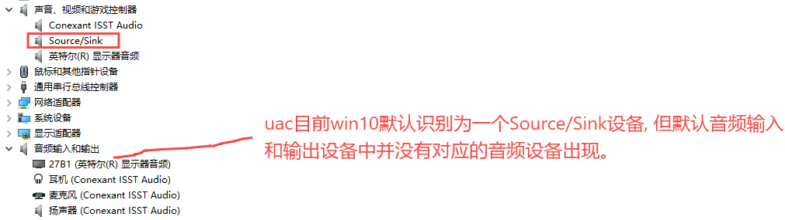
但是音频输入和输出设备中并没有出现对应的音频设备。需右键点击右下角声音标志, 进入声音设置选项, 如下图:
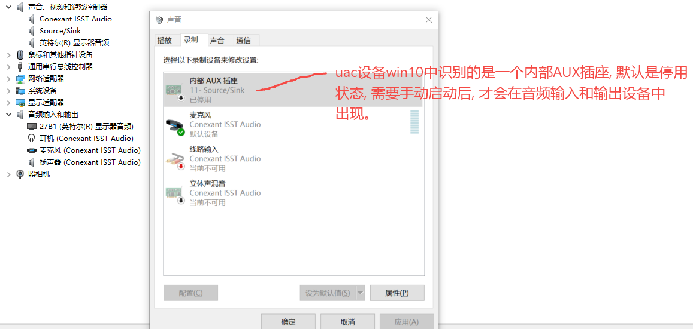
内部AUX插座启用后就出现了音频设备。
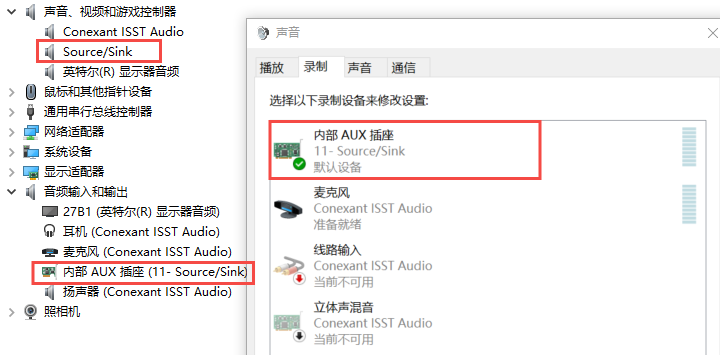
然后就可以利用audacity, 飞书, 企业微信, potplayer程序进行验证。
8.8.2.7. 如何修改uvc摄像头支持的格式和分辨率?
目前代码需要修改两处地方, 可在以下两处添加, 删除对应分辨率, 注意需保持匹配。
prebuilts/root_hijack/usb/gadget/usb-gadget.sh 的create_uvc和delete_uvc函数处,
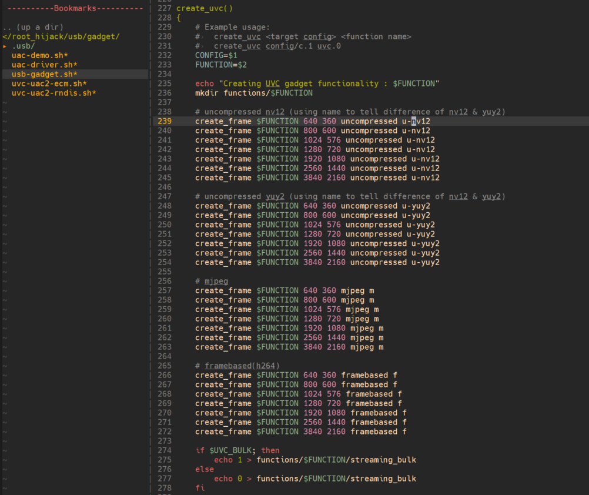
hbre/libhapi/sample/usb/gadget/libguvc/src/uvc_gadget.c处
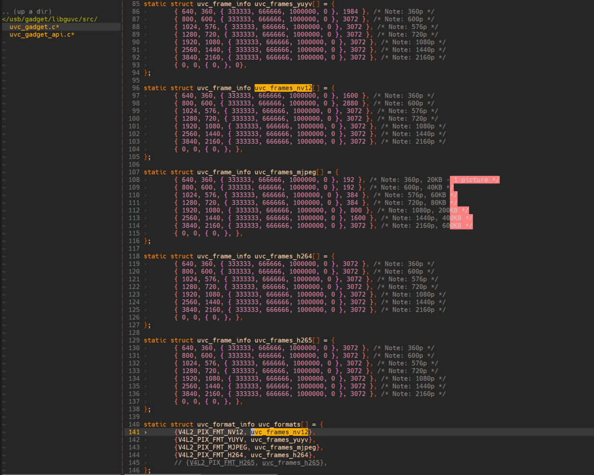
8.8.2.8. 如何修改uac设备的音频采样率和频道数?
可修改 /etc/init.d/usb-gadget.sh 的create_uac2处,
最终修改/sys/kernel/config/usb_gadget/g_comp/functions/uac2.0中的相关参数。
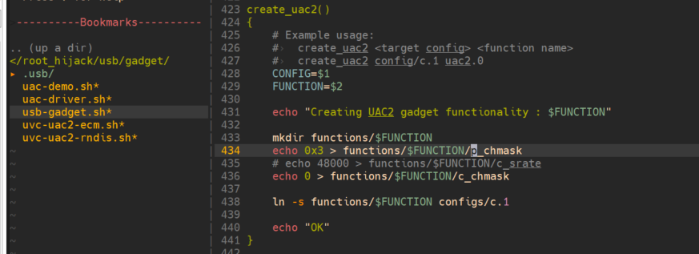
root@x3dvbx3-samsung2G-2666:/sys/kernel/config/usb_gadget/g_comp/functions/uac2.0# ls -all
drwxr-xr-x 2 root root 0 Jan 1 08:05 .
drwxr-xr-x 3 root root 0 Jan 1 08:05 ..
-rw-r--r-- 1 root root 4096 Jan 1 08:05 c_chmask
-rw-r--r-- 1 root root 4096 Jan 1 08:05 c_srate
-rw-r--r-- 1 root root 4096 Jan 1 08:05 c_ssize
-rw-r--r-- 1 root root 4096 Jan 1 08:05 p_chmask
-rw-r--r-- 1 root root 4096 Jan 1 08:05 p_srate
-rw-r--r-- 1 root root 4096 Jan 1 08:05 p_ssize
-rw-r--r-- 1 root root 4096 Jan 1 08:05 req_number
root@x3dvbx3-samsung2G-2666:/sys/kernel/config/usb_gadget/g_comp/functions/uac2.0# cat p_chmask
3
root@x3dvbx3-samsung2G-2666:/sys/kernel/config/usb_gadget/g_comp/functions/uac2.0# cat p_srate
48000
root@x3dvbx3-samsung2G-2666:/sys/kernel/config/usb_gadget/g_comp/functions/uac2.0# cat p_ssize
2
例如:
只做uac micphone设备 (即只有uac 单向playback, x3m->PC)
echo 0x3 > functions/$FUNCTION/p_chmask # 双通道
echo 48000 > functions/$FUNCTION/p_srate # 48khz采样率
echo 0 > functions/$FUNCTION/c_chmask # 将capture通道声道数设置为0, 则没有PC->X3的通道
做uac micphone/speaker双向设备
echo 0x3 > functions/$FUNCTION/p_chmask # x3->PC playback双通道
echo 16000 > functions/$FUNCTION/p_srate # 16khz采样率
echo echo 0x3 > functions/$FUNCTION/c_chmask # PC->x3 capture双通道
echo 16000 > functions/$FUNCTION/c_srate # 16khz采样率
8.8.2.9. 修改uac设备采样率, 通道等配置后, win10平台无法打开问题?
win10平台有驱动记忆功能, 即usb设备如果vid, pid未发生变化的话, 就算采样率,
通道数等信息发生变化, win10依旧会采用之前的驱动,
不会重新加载驱动。故导致按上述item修改完配置的uac设备, win10 Potplayer,
audacity等软件无法打开。
ubuntu等电脑没有该问题。
解决方法:
通过设备管理器卸载x3m对应设备 (通过详细信息->硬件id等信息找到x3设备, 通过usb-gadget.sh启动的是01db/0104)
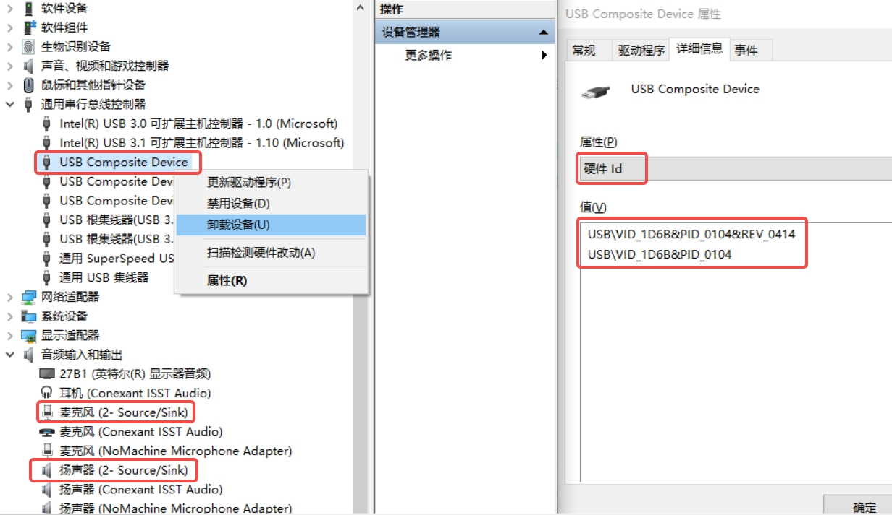
然后右键点击扫描检测硬件改动, 则会重新加载uac设备驱动。 (或者热插拔也可以。)
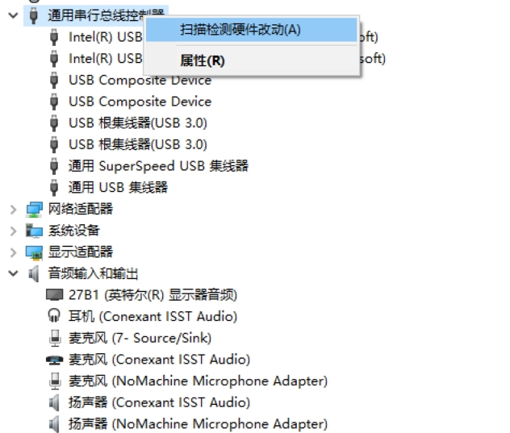
通过电脑桌面右下角音量->右键->声音->录制->属性->高级 可查看默认格式是否正确, 如果没有高级选项, 则说明驱动未重新加载, 后续potplayer等软件打开会失败或卡住。
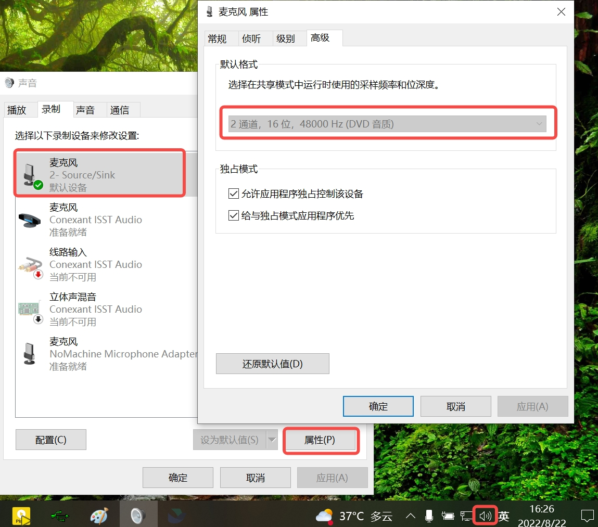
*注: sdb开发板热插拔会切换usb主从模式, rel-br22分支代码uac2部分有bug导致热插拔后枚举失败问题. 可卸载extcon-usb-gpio驱动, 移除otg功能, 让sdb板子保持在设备端, 则没有该bug.
echo soc:usb-id > /sys/bus/platform/drivers/extcon-usb-gpio/unbind
8.8.2.10. uvc isoc传输多带宽配置相关?
Linux主线代码关于uvc isoc模式只实现了 alt 0 - zero bandwidth, alt 1 - full bandwidth两种带宽配置,
实际成品摄像头通常根据各种分辨率提供不同的带宽配置, 以保证数据负载能相对均匀地分布在usb等时传输的微帧中。以做到名副其实的等时传输。
主线最新代码已经实现了这套机制,
内核态patch请参考 commit a1426bf90fd504c3897fd587f4a91d6db6a5e422
用户态patch请参考 commit ebf21f479c0bea271cbf106432bd0494041985a8
目前代码已实现了nv12, yuy2, mjpeg三种格式的多带宽配置方案, h264由于本身码率变化更大, 故依然采用了 空/满带宽两种配置方式。
客户如果修改mjpeg的编码质量等参数, 导致相应的带宽配置不匹配, 可以手动修改用户态程序
hbre/libhapi/sample/usb/gadget/libguvc/src/uvc_gadget.c 进行max pakcket size的修改。
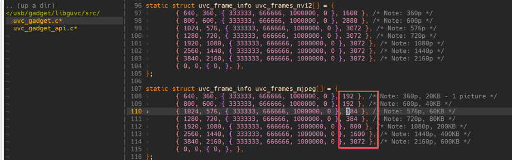
注: max_packet_size请参考内核drivers/usb/gadget/function/f_uvc.c中的isoc_max_packet_size值进行修改。如需添加或修改一些其他值， 需内核和用户态程序共同修改。
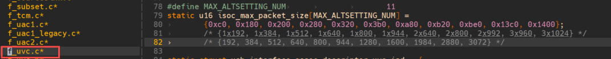
8.8.2.11. uvc isoc传输性能方面问题汇总?
usb isoc传输是一种注重实时性, 不注重数据完整性的传输协议。 类似udp, isoc传输没有数据出错重传机制。故设备端中断处理, 数据传输等性能方面会影响到isoc传输的数据完整性。
对于h264, mjpeg等压缩数据来说, isoc传输的丢帧策略就会导致图像花屏, 撕裂等现象。
常见的丢数据场景有
系统负载过高, 线程和中断处理繁忙, 导致设备端发数据给usb控制器慢了, dwc3控制器发现数据带的微帧号已经过期了, 则会丢弃该帧数据。报-18 (Missed Isoc)错误。
usb控制器axi总线优先级低, 导致dma从ddr上搬运数据的效率过低, 最终导致数据超时被丢弃。
usb信号质量不行(眼图没过), 导致usb总线上数据出错, 主机端虽然会做crc校验, 但没有重传机制, 导致花屏现象产生。
总结有如下一些方式提高usb模块的性能:
将usb中断单独绑定到其他cpu核心上, 避免都在cpu0上中断竞争。
cat /proc/interrupts # 找到dwc3的中断号(我的系统中是178)
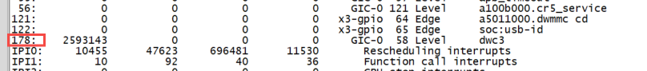
echo 8 > /proc/irq/178/smp_affinity # 将dwc3的中断绑定在cpu 核心4上
用户态进程绑到其他空闲核心上
ddr qos调整usb模块访问的优先级
cat /sys/bus/platform/drivers/ddr_monitor/write_qos_ctrl/peri cat /sys/bus/platform/drivers/ddr_monitor/read_qos_ctrl/peri echo 15 > /sys/bus/platform/drivers/ddr_monitor/write_qos_ctrl/peri echo 15 > /sys/bus/platform/drivers/ddr_monitor/read_qos_ctrl/peri
调整cpu频率到performance模式
echo performance > /sys/devices/system/cpu/cpufreq/policy0/scaling_governor调高ddr到更高的稳定频率(比如3200MHz, 4266MHz)